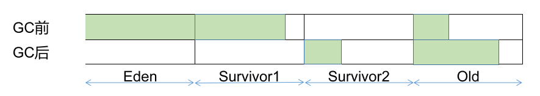
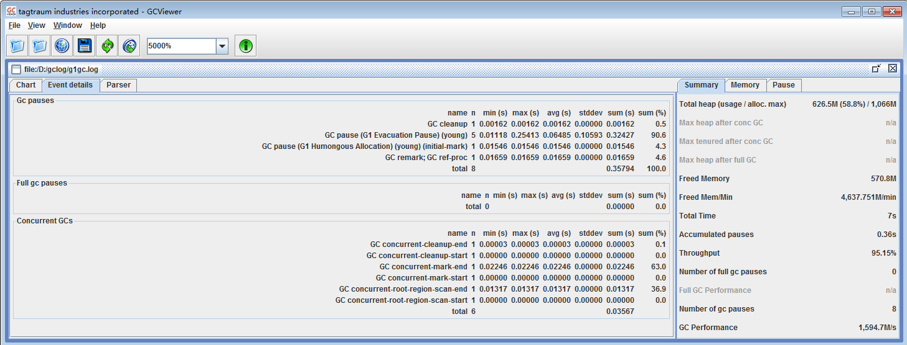

原文连接:https://www.cnblogs.com/jason1990/p/11736779.html
开发过程中，经常需要对GC的垃圾收集器参数不断的进行动态调整，从而更充分的压榨机器性能，提升应用效率。本文将从常见的Parallel/G1垃圾收集器的GC日志着手，分析GC日志的具体含义，以及示范如何根据GC日志调整参数。
1. 准备工作
(1) VM Options
应用程序需要设置如下参数，以便将GC信息数值至gc.log文件中，供后续分析。
-XX:+DisableExplicitGC -XX:+HeapDumpOnOutOfMemoryError -XX:HeapDumpPath=./logs -XX:+PrintGCDetails -XX:+PrintGCTimeStamps -XX:+PrintGCDateStamps -Xloggc:./logs/gc.log(2) GC统计工具
为了更好的统计GC日志信息，我们将借助于GCViewer桌面软件(开源，地址为：https://github.com/chewiebug/GCViewer)，下载之后执行maven clean package -Dmaven.test.skip=true即可完成程序的编译，双击target文件夹下的gcviewer-1.36-SNAPSHOT.jar（具体名称由下载的GCViewer版本确定）即可执行程序。
原GCViewer于2008年后停止维护，上文提供的仓库为chewiebug维护的Fork版本。
(3) 机器信息
本机参数：
jdk版本:Java HotSpot(TM) 64-Bit Server VM (25.172-b11) for windows-amd64 JRE (1.8.0_172-b11).
(4) 测试程序
自行编写的Flink应用（主要优点是：吃内存，加上写文章时正好在家里学习Flink...）。
2. Parallel收集器
Java HotSpot(TM) 64-Bit Server VM (25.172-b11) for windows-amd64 JRE (1.8.0_172-b11), built on Mar 28 2018 21:21:52 by "java_re" with MS VC++ 10.0 (VS2010)
Memory: 4k page, physical 16768628k(8408808k free), swap 33535356k(23695248k free)
CommandLine flags: -XX:+DisableExplicitGC -XX:+HeapDumpOnOutOfMemoryError -XX:HeapDumpPath=$./logs -XX:InitialHeapSize=268298048 -XX:MaxHeapSize=4292768768 -XX:+PrintGC -XX:+PrintGCDateStamps -XX:+PrintGCDetails -XX:+PrintGCTimeStamps -XX:+UseCompressedClassPointers -XX:+UseCompressedOops -XX:-UseLargePagesIndividualAllocation -XX:+UseParallelGC
2019-10-24T15:33:39.513+0800: 2.164: [GC (Allocation Failure) [PSYoungGen: 65536K->7875K(76288K)] 65536K->7891K(251392K), 0.0275982 secs] [Times: user=0.17 sys=0.00, real=0.03 secs]
2019-10-24T15:33:41.320+0800: 3.970: [GC (Allocation Failure) [PSYoungGen: 73411K->10738K(76288K)] 73427K->12337K(251392K), 0.0147806 secs] [Times: user=0.02 sys=0.00, real=0.01 secs]
2019-10-24T15:33:41.772+0800: 4.422: [GC (Metadata GC Threshold) [PSYoungGen: 22142K->6329K(76288K)] 23741K->7935K(251392K), 0.0076904 secs] [Times: user=0.00 sys=0.00, real=0.01 secs]
2019-10-24T15:33:41.780+0800: 4.430: [Full GC (Metadata GC Threshold) [PSYoungGen: 6329K->0K(76288K)] [ParOldGen: 1606K->6175K(100352K)] 7935K->6175K(176640K), [Metaspace: 20679K->20679K(1067008K)], 0.0334417 secs] [Times: user=0.23 sys=0.00, real=0.03 secs]
2019-10-24T15:33:42.076+0800: 4.726: [GC (Allocation Failure) [PSYoungGen: 65536K->10738K(132608K)] 71711K->64480K(232960K), 0.0512660 secs] [Times: user=0.06 sys=0.42, real=0.05 secs]
2019-10-24T15:33:42.164+0800: 4.815: [GC (Allocation Failure) [PSYoungGen: 132594K->10738K(141824K)] 186336K->184366K(316416K), 0.1241149 secs] [Times: user=0.03 sys=0.94, real=0.12 secs]
2019-10-24T15:33:42.288+0800: 4.939: [Full GC (Ergonomics) [PSYoungGen: 10738K->8672K(141824K)] [ParOldGen: 173628K->174573K(399872K)] 184366K->183245K(541696K), [Metaspace: 22192K->22192K(1069056K)], 0.0938949 secs] [Times: user=0.39 sys=0.13, real=0.09 secs]
2019-10-24T15:33:42.415+0800: 5.066: [GC (Allocation Failure) [PSYoungGen: 139744K->120826K(320000K)] 314317K->312422K(719872K), 0.1433171 secs] [Times: user=0.00 sys=1.08, real=0.14 secs]
2019-10-24T15:33:43.607+0800: 6.257: [GC (GCLocker Initiated GC) [PSYoungGen: 319994K->161768K(360960K)] 511592K->392382K(760832K), 0.2255222 secs] [Times: user=0.36 sys=1.39, real=0.22 secs]
2019-10-24T15:33:45.921+0800: 8.572: [GC (Metadata GC Threshold) [PSYoungGen: 324597K->172709K(544768K)] 555211K->403387K(944640K), 0.1776332 secs] [Times: user=0.03 sys=1.16, real=0.18 secs]
2019-10-24T15:33:46.099+0800: 8.749: [Full GC (Metadata GC Threshold) [PSYoungGen: 172709K->0K(544768K)] [ParOldGen: 230678K->398712K(628224K)] 403387K->398712K(1172992K), [Metaspace: 36781K->36523K(1081344K)], 0.2291498 secs] [Times: user=0.20 sys=1.25, real=0.23 secs]
2019-10-24T15:33:50.564+0800: 13.214: [GC (Allocation Failure) [PSYoungGen: 326144K->88922K(569344K)] 790394K->553180K(1197568K), 0.0217578 secs] [Times: user=0.02 sys=0.00, real=0.02 secs]
Heap
PSYoungGen total 569344K, used 303805K [0x000000076ab80000, 0x00000007a2800000, 0x00000007c0000000)
eden space 326144K, 65% used [0x000000076ab80000,0x0000000777d58c70,0x000000077ea00000)
from space 243200K, 36% used [0x000000077ea00000,0x00000007840d6960,0x000000078d780000)
to space 226304K, 0% used [0x0000000794b00000,0x0000000794b00000,0x00000007a2800000)
ParOldGen total 628224K, used 464258K [0x00000006c0200000, 0x00000006e6780000, 0x000000076ab80000)
object space 628224K, 73% used [0x00000006c0200000,0x00000006dc760a18,0x00000006e6780000)
Metaspace used 55000K, capacity 59794K, committed 60032K, reserved 1099776K
class space used 8350K, capacity 10033K, committed 10112K, reserved 1048576K
上面所示内容为设置基本VM Options，启动应用后的GC日志，查看可知在没有指定垃圾收集器的情况下，jdk默认选择了ParallelGC收集器(在没有指定垃圾收集器的时候，并且内存较为充足的情况下，jdk会默认选择ParallelGC)。
2.1 Young GC
截取一条日志进行分析（为了更好的展示，将单挑日志拆分为三段，并使用上标表示每个字段的位置）：
2019-10-24T15:33:42.076+08001: 4.7262:
[GC3 (Allocation Failure4) [PSYoungGen5: 65536K->10738K6(132608K7)] 71711K->64480K8(232960K9), 0.0512660 secs10]
[Times: user=0.06 sys=0.42, real=0.05 secs11]
针对此条日志，进行具体分析：
(1) 2019-10-24T15:33:42.076+0800:当前GC事件发生时的UTC时间戳；
(2) 4.726: 当前GC发生时，JVM的启动事件(单位为s)；
(3) GC: 用于区分Young GC与Full GC，当前GC为Young GC；
(4) Allocation Failure: 当前GC的产生原因(新生代中空间不足以为新对象分配空间)；
(5) PSYoungGen: 垃圾收集器的名称；
(6) 65536K->10738K: GC前后新生代的内存空间使用量；
(7) 132608K: 新生代总内存量；
(8) 71711K->64480K: GC前后应用堆内存的变化情况(包括新生代和老年代)；
(9) 232960K: JVM堆的可用内存；
(10) 0.0512660 secs: 本次GC耗时，单位为s；
(11) [Times: user=0.06 sys=0.42, real=0.05 secs]:GC事件的耗时;
- user: 此次GC，所有GC线程消耗的CPU事件总和；
- sys: 此次GC，操作系统调用等事件所消耗的时间总和；
- real: 应用停顿的总时间，在并行的GC中，此数值应该接近(user + sys) / GCThreads，即单核上的平均停顿时间。
综上所述，在GC前总共使用了71711K堆内存，其中新生代使用了65536K，则老年代使用了6175K。GC后，新生代释放了65536-10738=54798K内存，但是堆内存仅释放了71711-64480=7231K内存，说明此次GC，有47567K的对象从新生代升级到了老年代。变化情况如下图所示：

2.2 Full GC
截取一条日志进行分析（为了更好的展示，将单挑日志拆分为三段，并使用上标表示每个字段的位置）：
2019-10-24T15:33:46.099+08001: 8.7492:
[Full GC3 (Metadata GC Threshold4) [PSYoungGen5: 172709K->0K6(544768K7)] [ParOldGen8: 230678K->398712K9(628224K10)] 403387K->398712K10(1172992K11),
[Metaspace12: 36781K->36523K13(1081344K14)], 0.2291498 secs15] [Times: user=0.20 sys=1.25, real=0.23 secs]16
针对此条日志，进行具体分析：
(1) 2019-10-24T15:33:46.099+0800: 当前GC事件发生时的UTC时间戳；
(2) 8.749: 当前GC发生时，JVM的启动事件(单位为s)；
(3) Full GC: 用于区分Young GC与Full GC，当前GC为Full GC；
(4) Metadata GC Threshold: 当前GC的产生原因(Metaspace空间占用达到阈值)；
(5) PSYoungGen: 新生代垃圾收集器名称；
(6) 172709K->0K: Full GC时，新生代内存空间将被清空；
(7) 544768K: 新生代总内存量；
(8) ParOldGen: 老年代垃圾收集器名称；
(9) 230678K->398712K: Full GC时，老年代内存空间变化情况；
(10) 628224K: 老年代总内存量；
(11) 403387K->398712K: GC前后堆内存的变化情况；
(12) 1172992K: JVM堆的可用内存；
(13) Metaspace: metaspace空间；
(14) 36781K->36523K: metaspace空间的变化情况；
(15) 1081344K: metadata的保留空间（metaspace时从jvm进程的虚拟地址空间中分离出来的）；
(16) 0.2291498 secs: 当前GC的耗时，单位为s；
(17) [Times: user=0.20 sys=1.25, real=0.23 secs]: 具体含义参见Young GC解释。
由以上数据可知，在此次Full GC的过程中，Young区域的数据被清空，但是Old区以及Metaspace区均进行扩容以便存放更多数据。
3. G1收集器
并发收集器主要有CMS以及G1收集器，因为在jdk 1.8上，G1收集器已经得到较大的完善，因此舍弃CMS收集器的日志分析，直接分析G1收集器（在VM Options中添加-XX:+UseG1GC即可）。如果读者想使用CMS收集器，只需要在VM Options中添加-XX:+UseConcMarkSweepGC即可。
2019-10-24T16:52:43.377+0800: 7.865: [GC pause (G1 Evacuation Pause) (young), 0.0197774 secs]
[Parallel Time: 10.9 ms, GC Workers: 8]
[GC Worker Start (ms): Min: 7865.0, Avg: 7865.0, Max: 7865.1, Diff: 0.1]
[Ext Root Scanning (ms): Min: 0.7, Avg: 1.7, Max: 5.7, Diff: 4.9, Sum: 13.9]
[Update RS (ms): Min: 0.0, Avg: 1.0, Max: 2.4, Diff: 2.4, Sum: 7.8]
[Processed Buffers: Min: 0, Avg: 11.3, Max: 29, Diff: 29, Sum: 90]
[Scan RS (ms): Min: 0.0, Avg: 0.3, Max: 0.6, Diff: 0.6, Sum: 2.7]
[Code Root Scanning (ms): Min: 0.0, Avg: 2.1, Max: 8.3, Diff: 8.3, Sum: 16.9]
[Object Copy (ms): Min: 0.0, Avg: 5.4, Max: 7.8, Diff: 7.8, Sum: 43.3]
[Termination (ms): Min: 0.0, Avg: 0.1, Max: 0.2, Diff: 0.2, Sum: 0.7]
[Termination Attempts: Min: 1, Avg: 2.4, Max: 4, Diff: 3, Sum: 19]
[GC Worker Other (ms): Min: 0.0, Avg: 0.0, Max: 0.0, Diff: 0.0, Sum: 0.2]
[GC Worker Total (ms): Min: 10.6, Avg: 10.7, Max: 10.7, Diff: 0.1, Sum: 85.6]
[GC Worker End (ms): Min: 7875.7, Avg: 7875.7, Max: 7875.8, Diff: 0.1]
[Code Root Fixup: 0.0 ms]
[Code Root Purge: 0.0 ms]
[Clear CT: 0.3 ms]
[Other: 8.6 ms]
[Choose CSet: 0.0 ms]
[Ref Proc: 7.6 ms]
[Ref Enq: 0.1 ms]
[Redirty Cards: 0.2 ms]
[Humongous Register: 0.0 ms]
[Humongous Reclaim: 0.0 ms]
[Free CSet: 0.3 ms]
[Eden: 161.0M(161.0M)->0.0B(182.0M) Survivors: 13.0M->21.0M Heap: 626.5M(1066.0M)->474.0M(1066.0M)]
[Times: user=0.05 sys=0.00, real=0.02 secs] G1的垃圾收集过程，因为其特殊的内存划分，导致存在很多细微的步骤。
我们截取其主要部分进行分析：
(1) [GC pause (G1 Evacuation Pause) (young), 0.0197774 secs]: 说明当前GC为Young GC，cpu耗时0.0197774s；
(2) [Parallel Time: 10.9 ms, GC Workers: 8]: 此次GC停顿的实际时间为10.9ms，共有8个线程参与清理工作；
(3) Eden: 161.0M(161.0M)->0.0B(182.0M) Survivors: 13.0M->21.0M Heap: 626.5M(1066.0M)->474.0M(1066.0M):
此段说明Eden区的内存共计161.0M被释放了，有部分对象转移至Survivors区导致Survivors区内存扩大，堆内存因为Eden区释放资源的缘故总量变小(空间未发生变化)。
因为在当前的GC日志抓取中，未存在Mixed GC，因此此处就不对Mixed GC日志进行分析(感兴趣的读者可以在较大的程序中获取G1 GC日志进行进一步分析)。虽然G1的GC日志虽然步骤很清晰，但是每次GC均会有大量日志产生，不便于根据日志进行分析，因此我推荐使用GCViewer可视化工具辅助进行分析。导入GC日志，信息如下图所示：

图中左侧详细罗列了GC的详细情况，包括GC Pause(停顿应用的GC数据)以及Concurrent GCs(与应用并发执行的GC数据)。右侧则概要的描述了应用开始执行后的吞吐量(Throughput：95.15%)，导致应用停顿的GC次数(Number of gc pauses：8)以及GC停顿时间(Accumulated pauses: 0.36s)。通过以上信息，就可以对G1收集器在应用执行过程的表现有一个清晰的认识。
3. 性能优化
直接根据GC日志进行针对性调优较为困难(生产环境的GC日志量比较大，尤其是CMS/G1的GC日志)，因此建议将GC日志导出，通过图形化工具GCViewer进行汇总统计，得到可靠的报表信息。
使用GCViewer进行调优时，一般关注以下几个指标：Throughput(吞吐量)，Number of gc pauses(GC停顿数量)以及Accumulated pauses(GC停顿总耗时)。
3.1 Parallel收集器调优
调优参数：
- -XX:MetaspaceSize: 在应用启动初期，普遍存在因为metaspace空间达到阈值引发的GC，因此可以合理设置Metaspace空间规避此类GC；
- -XX:MaxGCPauseMillis: 最大GC停顿时间，这是个软目标，JVM将尽可能（但不保证）停顿小于这个时间;
- -XX:GCTimeRatio: 垃圾收集时间占总时间的比例(假设GCTimeRatio设置为N，则垃圾收集时间占总时间的比例为1 / (1 + N))
Parallel收集器是自适应收集器，一般设置MaxGCPauseMillis以及GCTimeRatio，即可由jdk进行动态调整，用户可以根据GC日志得到最佳的停顿时间和吞吐量设置方案。
3.2 G1收集器调优
关于G1垃圾收集器的调优，建议有以下两条：
- 年轻代大小：避免使用-Xmn选项或-XX:NewRatio 等其他相关选项显式设置年轻代大小，因为固定年轻代的大小会覆盖暂停时间目标。
- 暂停时间目标：每当对垃圾回收进行评估或调优时，都会涉及到延迟与吞吐量的权衡。G1是增量垃圾回收器，其吞吐量目标是90% 的应用程序时间和10%的垃圾回收时间。因此，暂停时间目标不要太严苛。目标太过严苛表示您愿意承受更多的垃圾回收开销，而这会直接影响到吞吐量。
如果对于性能有着严苛的要求，可以参照https://toutiao.io/k/8b0dxca的做法，开启G1的所有参数:
-Xmx30g -Xms30g
-XX:MaxDirectMemorySize=30g
-XX:+UseG1GC
-XX:+UnlockExperimentalVMOptions
-XX:MaxGCPauseMillis=90
-XX:G1NewSizePercent=8
-XX:InitiatingHeapOccupancyPercent=30
-XX:+ParallelRefProcEnabled
-XX:ConcGCThreads=4
-XX:ParallelGCThreads=16
-XX:MaxTenuringThreshold=1
-XX:G1HeapRegionSize=32m
-XX:G1MixedGCCountTarget=64
-XX:G1OldCSetRegionThresholdPercent=5其中重点需要调优的参数有：
- G1NewSizePercent ：G1的Young区大小是通过算法来自适应确定的, 也就是根据之前Young区GC的耗时来确定之后的Young大小,如果耗时过长,则调小Young区,耗时过短,则调大Young区. 这个参数表示Young的最小百分比；
- InitiatingHeapOccupancyPercent: 当占用内存超过这个百分比的时候, G1开始执行多次Mixed GC来整理老年代内存碎片；
- G1MixedGCCountTarget: 当占用内存超过InitiatingHeapOccupancyPercent阀值时, 最多通过多少次Mixed GC来将内存控制在阀值之下；
- MaxTenuringThreshold: 当一个对象gc的代数超过这个值的时候, 会将对象从young区挪到old区；
- G1HeapRegionSize: 表示G1将每个Region切分成多大, 注意一定要写单位, 例如32m。
逐个调整以上参数并收集GC日志，通过GCViewer收集各项指标，最终根据实际情况挑选满意的G1收集器参数即可。
PS:
如果您觉得我的文章对您有帮助，请关注我的微信公众号，谢谢!